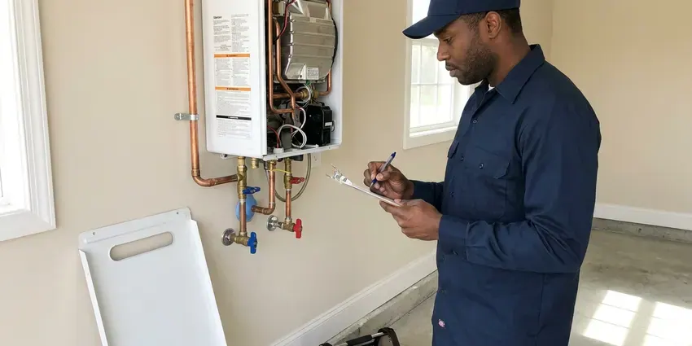

Gas Water Heater Repair in Roswell, NM
Water that never gets hot from a gas tank in Roswell, NM usually means a failing part, not a dead heater. GVK Plumbing finds which one and replaces it.
- Clear Repair Prices
- Licensed Plumbers
- Fast Gas Heater Repair
- Guaranteed Workmanship

Need Gas Water Heater Service in Roswell, NM?
One visit fixes most gas tanks. Book a time that works for you.
Pilot, Valve & Vent Repair for Gas Water Heaters in Roswell, NM
From a pilot that will not hold to a gas valve that overheats the water, GVK Plumbing handles the full list of gas water heater problems in Roswell, NM. We test before we replace anything. That keeps the bill down.
Our expertise includes:
- Thermocouple, thermopile and pilot assembly swaps on sealed burners
- Power vent blower, pressure switch and flue draft fixes
- Pilot & Burner Repairs

Additional Plumbing Repair Services in Roswell, NM
We offer expert plumbing repair services across Roswell, NM to stop leaks, clear blockages, and keep every fixture working the way it should.




Roswell tankless water heater repair specialists


Customers
Why Choose GVK Plumbing for Gas Water Heater Repair in Roswell, NM?
A gas water heater keeps an open flame a few feet from your stored paint and laundry, so who works on it matters. Our plumbers have years on gas controls and venting. They diagnose with meters, not guesses. Then the repair gets done once, correctly.
- Trained Techs, Our techs are trained on gas piping, venting and combustion air.
- Gas Safety, We leak test every joint we open before relighting.
- Local Knowledge, We work with Roswell plumbing codes and the failures we see most in New Mexico homes.
Citywide Coverage
From older districts to new construction, our techs cover Roswell and see every kind of gas water heater install there is. Attic and closet heaters each come with vent quirks. Those are familiar to us.
Experienced Team
Our techs train on gas controls and venting, and they repair gas water heaters every week in homes across Roswell. They know the sealed combustion systems Rheem and Bradford White use. You can see it in the work.
Safety-First Approach
The fuel gas code your town adopted spells out sediment traps and shutoff valve placement, and we follow it on every repair we do. We confirm the heater has enough combustion air. Clearance to combustibles is measured too.
Trusted Certified Roswell Plumbing Services Professionals
At GVK Plumbing, we take pride in licensed, certified plumbing services throughout Roswell, NM. Credentials matter in this trade. Our plumbers hold recognized industry credentials, and they follow strict safety and quality rules on every repair, installation and maintenance call we run.
Call Us Now PHCC Plumbing Contractor Recognition
PHCC Plumbing Contractor Recognition Better Business Bureau (BBB) Accreditation
Better Business Bureau (BBB) Accreditation Angi Certified Pro
Angi Certified Pro ISO 9001 Quality Management Certification
ISO 9001 Quality Management CertificationLicensed Gas Water Heater Repair in Roswell, NM
Pilot Light Repair in Roswell
The thermocouple is the first thing we test when a pilot will not stay lit. A millivolt meter tells us in about a minute whether it is producing enough current. If it reads fine, the next suspects are a clogged pilot orifice, a cracked piezo wire or a thermal cutoff that tripped because the combustion chamber overheated from blocked air. Most of these jobs run about an hour.

Gas Control Valve Replacement in Roswell, NM
Honeywell and White-Rodgers valves report faults with a blinking LED, and the flash count matches a chart on the label. The tech reads the code and tests the thermopile and sensors before condemning the valve. Sometimes the valve really is bad. When the control itself is the problem, we replace it with an exact-match valve or a listed universal model, set the temperature and leak test every joint on the gas train before relighting. You get the old valve back if you want it.
Burner Cleaning and Repair in Roswell, NM
Yellow flame tips, soot on the burner door or a roaring sound at startup all mean the burner is not getting clean air. The burner comes out, the ports get brushed and the orifice gets cleared. We also confirm the orifice is drilled for the fuel you have, because a natural gas orifice on a propane heater, or the reverse, will soot up the flue and push carbon monoxide levels well past normal. A good flame is blue and steady. Rust flakes on the burner tell us to look up the flue.
Pilot Light & Burner Issues in Roswell
A pilot that lights, holds for ten seconds and then goes out is almost always a thermocouple or a weak magnet in the gas valve. No flame at all usually means a plugged pilot orifice or a bad piezo. Burner trouble looks different. The pilot stays lit but the main flame never comes on, which points to the thermostat side of the valve, a tripped thermal cutoff or a flame arrestor so clogged with lint that the burner starves for air. We test each piece in that order.
Thermostat and Gas Valve Repair in Roswell, NM
Scalding water at the kitchen tap is a valve problem until proven otherwise. Sensors can drift as they age, and dials sometimes get bumped past the hot mark. Our plumbers in Roswell, NM measure the outlet temperature at the nearest fixture, compare it to the dial and replace the gas control if it is overshooting, because water at 140 degrees can burn a child's skin in a few seconds. A setting near 120 degrees works for most households.
Propane Water Heater Repair in Roswell
Propane and natural gas heaters look the same but burn at different pressures. Propane units need a matching orifice and a control set near 11 inches of water column. Natural gas runs closer to 7 inches, so a heater converted badly, or a regulator that drifted, gives you soot, a yellow flame and a pilot that keeps going out for no obvious reason. A manometer reading tells us the supply pressure. Wrong parts get swapped for the right ones.
Tank Leaks & Anode Rods in Roswell
Corrosion starts at the anode rod and works its way into the steel once the rod is spent. Many rural homes rely on private wells, and some groundwater carries naturally occurring arsenic or high mineral content that calls for testing and treatment. We pull the anode, check how much magnesium or aluminum is left and replace it if the core wire is showing. A fresh anode, a drained tank and a relief valve that seats properly can add years to a heater in a Roswell home that has not started leaking from the shell. Water from the shell seam is another story. At that point the tank has to go.

Repairing Older Gas Water Heaters in Roswell
Older tanks with standing pilots and no vapor sensor are still out there in Roswell, mostly in basements and utility closets. Their parts are simple, and a universal thermocouple fits nearly all of them. We can keep a pre-2003 heater running when the tank is sound, but we also check the draft hood, the flue connector and the gas cock, since those fittings on an old install are often original and corroded. Plenty of older installs never got a sediment trap. One goes in while we are there.
Gas Water Heater Repair Near Me in Roswell, NM
Our techs work Roswell every day, so they know which neighborhoods have older atmospheric tanks and which have newer power vent units. It cuts down on guesswork. Most visits start with a quick look at the vent. A heater with a disconnected flue or a blocked chimney gets fixed before anything else, since a bad vent can send carbon monoxide into living space.
Searching for gas water heater repair near me in Roswell, NM should turn up a plumber who can be there today. GVK Plumbing keeps techs spread across town, so the drive is short and the truck is already stocked with gas valves and pilot kits. Homes across New Mexico put gas tanks in garages, closets and attics. Every spot comes with its own vent problems. We have worked in all three.
GVK Plumbing at a Glance
- Licensed and insured plumbers serving Roswell, NM
- 24/7 emergency service with same-day scheduling
- Clear written estimates, no hidden fees
- 4.8-star rated by 320+ New Mexico customers
Roswell Map
Roswell Information
- Population
- 47,109
- Area codes
- 575/505/432
- Service area
- Roswell and towns within a 40 mile drive
- Nearby
- Artesia, Carlsbad, Lovington, Portales
Many rural homes rely on private wells, and some groundwater carries naturally occurring arsenic or high mineral content that calls for testing and treatment. A gas tank that gets flushed and checked once a year holds steady hot water longer.
Expert Services
Call GVK Plumbing for reliable plumbing work done by licensed pros in Roswell, NM.
Our Specialized Plumbing Services in Roswell, NM
At GVK Plumbing, you get every kind of plumbing service from one company across Roswell, NM. From leak detection to full system installs, our team works fast and charges fair prices on homes and commercial properties alike. Explore our core services below:


What Happens on a Gas Water Heater Call in Roswell, NM
Here is how we get your gas water heater back to making hot water.
Contact Us
Reach GVK Plumbing at (505) 581-4975 and describe the problem. We schedule a tech for a time that works at your Roswell home.
On-Site Diagnosis
A licensed plumber tests the heater and finds the root cause. You see the readings.
Upfront Estimate
You get a written price before any work begins. Repair and replacement options are both on the table if the tank is old.
Frequently Asked Questions About Gas Water Heater Repair in Roswell
Expect a range of $150 to $800 in Roswell, NM. The part and the access decide where in that range you fall. Simple jobs like a thermocouple sit near the bottom, while a gas control valve, a power vent blower or a flue rebuild pushes the bill toward the top end of the range. The quote comes before the work.
Yes, when the venting fails. A disconnected flue, a blocked chimney or a backdrafting draft hood can send exhaust into the house. We check draft on every repair with a smoke test or a combustion analyzer, and we look for heat-scorched paint or melted plastic near the draft hood, which are signs of spillage. Put CO alarms on every floor.
Every repair is. We stand behind the labor, and parts keep the maker's coverage. The length of coverage for each part is listed on the invoice next to the part number, so you know what applies if the same thing fails again in a year. The office can pull up those terms anytime.
Lukewarm water, a pilot that keeps going out and a rumbling noise from the bottom of the tank are the usual early signs of trouble. Water around the base or rust in the hot water means the tank itself may be failing. A sulfur smell is a separate matter. Treat it as a gas leak until someone tests it.
It does, and gas tanks feel it more than electric ones. The burner heats the bottom of the tank, right where sediment collects. That layer overheats the steel, makes the popping noise you hear during a heating cycle and can shorten the life of the tank by years, especially in homes on hard water. Annual flushing slows it down.
That light is the valve's diagnostic code. The flash pattern lines up with a chart printed on the heater's label. Common codes point to a weak thermopile, an open thermal switch or a sensor fault, and we test the part the code points to before replacing the valve. Counting the flashes helps us bring the right part.
Not for anything past relighting the pilot. Gas fittings have to be tightened, doped and leak tested correctly. A loose union or a vent connector pushed back on without screws can leak gas or carbon monoxide into a house for weeks before anyone notices, and the first warning is sometimes a headache. A CO alarm near the heater is cheap insurance.
Part replacement typically does not. Swapping a thermocouple or gas valve is a repair in most places. Replacing the water heater, relocating it or changing the gas piping or venting generally does need a permit, and we pull it, book the inspection and handle the paperwork with the local building office. Permits add a few days at most.
What People Are Saying About Our Plumbing Experts?

Tyler J.
We bought a taller comfort height toilet for my dad, who just had knee surgery. The plumber pulled the old one, found the flange was cracked, and replaced it before setting the new bowl. Took about two hours.
Toilet Installation · Alamogordo, NM
Rachel N.
Hard water was leaving white crust on every faucet and our dishwasher was struggling. The tech tested the water, recommended a softener sized for a family of five, and installed it with a bypass valve in one afternoon. The spots on our glasses are gone.
Water Softener · Carlsbad, NM
Angela D.
Our sump pump quit during a storm and the water was an inch from the basement carpet. GVK Plumbing put in a new pump with a battery backup that same evening. We have had two heavy rains since. It kicked on both times.
Sump Pump · Portales, NM
Monica A.
Our water bill nearly doubled in one month with no change in how we used water. The tech checked the meter, heard the leak under the hallway with his equipment, and opened a hole about a foot square. Fixed the same day.
Slab Leak Repair · Carlsbad, NM
Brian W.
I smelled gas behind the dryer and called right away. The plumber found a corroded flex connector, replaced it, and pressure tested the whole line before turning the gas back on. He let me watch the gauge hold steady for fifteen minutes.
Gas Line Repair · Portales, NMGreg S.
I manage a small strip center with six tenants. GVK Plumbing handles our annual backflow testing and fixed a recurring clog in the shared sewer line that had been backing into the nail salon. Their reports come in clean and on time.
Commercial Plumbing · Hobbs, NM